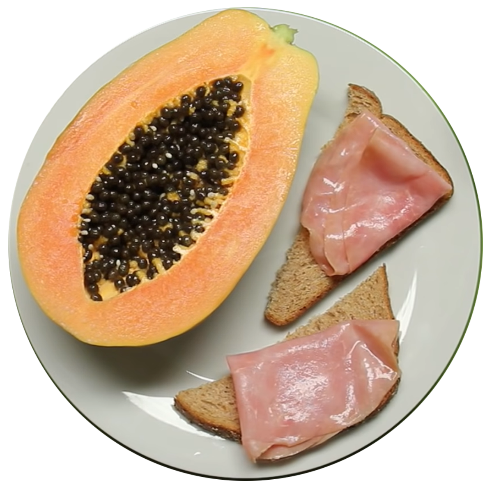
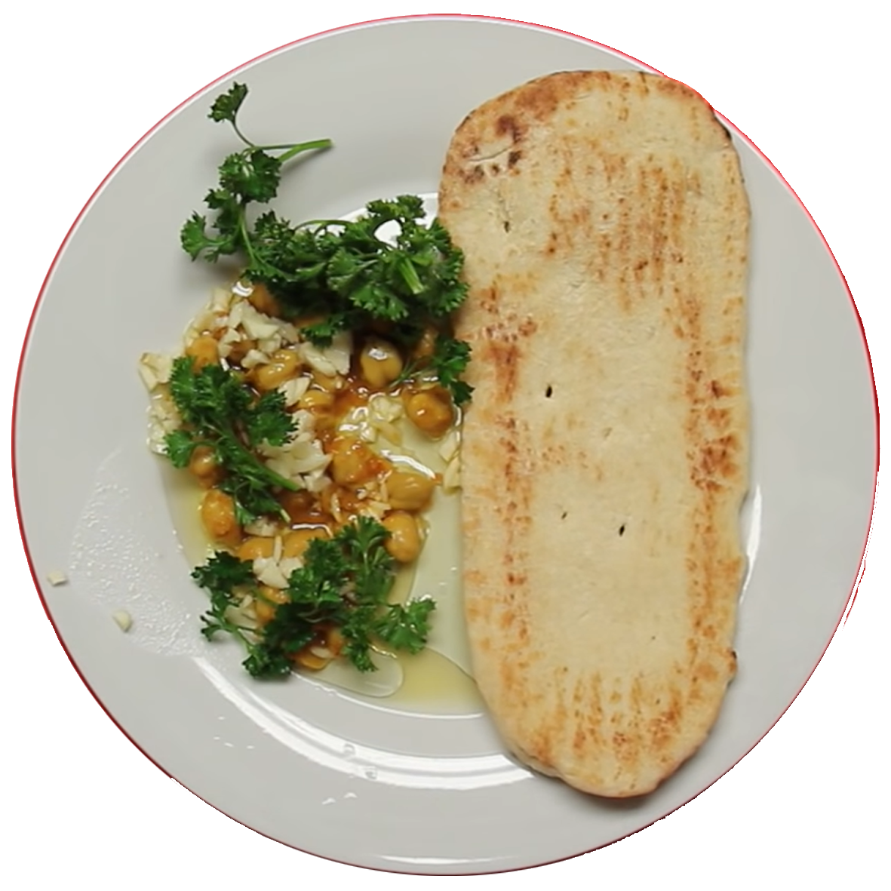

Brasile
Affettati, formaggi e pane compongono la classica colazione salata. Si mangiano anche panini al formaggio e una torta cremosa a base di cocco e parmigiano.
Cina
I bao zi sono dei panini fatti con farina, zucchero e lievito di forma rotonda cotti al vapore, accompagnati da budino di riso. Non si inizia la giornata senza acqua calda e limone.

Egitto
Foul Madamas è composto da fave, ceci, aglio e limone, condito con olio di oliva, peperoncino, salsa tahini, un uovo bollito e verdura verde. Viene servito con la pita locale.